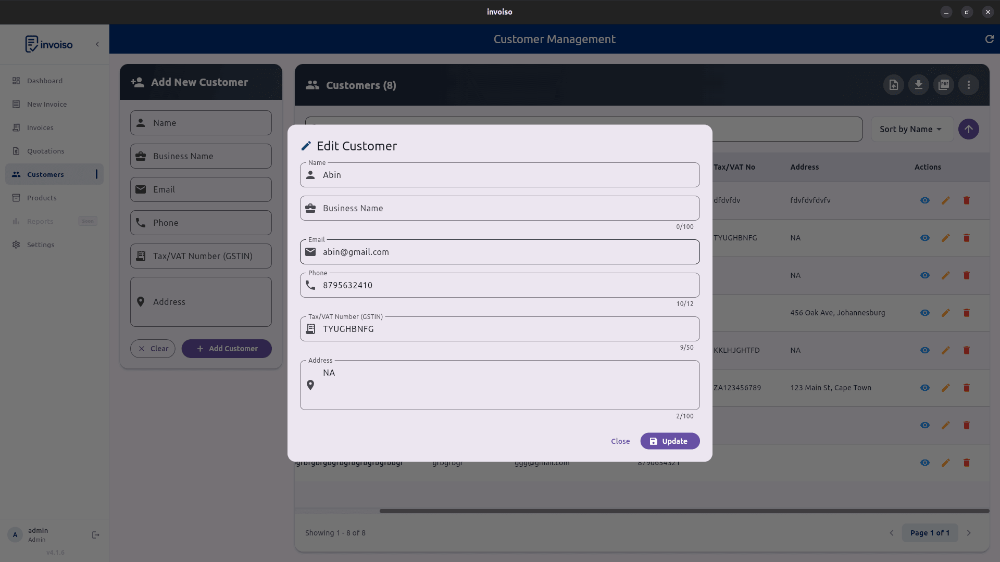

Setting up a new billing tool usually starts the same painful way: an empty customer list and an empty product catalogue, both of which need to be filled in one entry at a time. If you're coming from a spreadsheet, from Vyapar, Tally, or another invoicing tool, or simply from a stack of paper records, that manual re-entry is the single biggest friction point in switching. Invoiso's CSV import, shipped in v4.0.5 (April 2026), is built specifically to remove that friction — you prepare or export a CSV file once, and load your whole customer list or product catalogue in a single pass.
What CSV import is actually for
A CSV file is just a spreadsheet saved in plain-text, comma-separated form — something every spreadsheet tool, accounting package, and even most POS systems can produce. Instead of Invoiso asking you to open every customer or product one by one and type in the same fields repeatedly, CSV import lets you hand it a file with all your records at once, and it creates them all in a single operation. This matters most at two moments: when you're first setting up Invoiso and migrating existing records in, and when you've built or updated a large batch of customers or products elsewhere and need to bring Invoiso's records in line.
Bulk importing customers
Invoiso's customer CSV import lets you bring in your entire customer list from a CSV file in one go. Two details make this reliable rather than risky:
- Duplicate detection. If a row in your CSV matches a customer that already exists in Invoiso, the import doesn't just silently create a second copy or silently overwrite the existing one.
- Per-row skip or overwrite choice. For each detected duplicate, you decide — row by row — whether to skip it (keep what's already in Invoiso) or overwrite it (replace the existing record with the CSV version).
This combination means you can safely re-run an import, or bring in a CSV that partially overlaps with your existing customer list, without worrying about ending up with duplicate customer entries cluttering your list or losing data you'd already entered by hand.
Around the same release, Invoiso also added a new Business Name field on customer records, which shows up on your generated PDFs as well. If your customer CSV includes a business name alongside the contact name, it carries through the import and appears correctly on invoices sent to that customer.

Importing and exporting your product catalogue
The same idea applies to products and services. Invoiso lets you import your full product catalogue via CSV, and export it back out — which matters because a one-way import isn't enough for most businesses. You usually need to make bulk edits somewhere other than inside the app — adjusting prices across dozens of products in a spreadsheet is much faster than editing each one individually — and then bring the updated list back in.
Two fields make the product catalogue CSV meaningfully more useful than a flat list of names and prices:
- Product/Service type. A new type field lets each row represent either a physical product or a service line item, and this field is used for filtering your catalogue inside Invoiso.
- default_discount. The product CSV export was improved to include a default_discount column, alongside type, so a discount that's normally applied to a given product or service travels with it through export and back through import.
To make the format clear, the downloadable sample CSV was updated to eight columns, including a worked example service row — so you can see exactly how a service-type entry should look next to a physical product entry, rather than guessing at the format from a blank template.

Why round-trip compatibility matters
"Round-trip" means you can export your catalogue to CSV, make changes in a spreadsheet, and re-import it without anything getting dropped or corrupted along the way. This is the detail that turns CSV import from a one-time migration tool into an ongoing workflow. Before the type and default_discount columns were added to the export, exporting and re-importing a catalogue risked losing that information, since the exported file simply didn't carry it. With both columns now included in the export and matched by the sample CSV's eight-column format, you can treat your product catalogue as something you're comfortable editing in bulk outside Invoiso whenever that's faster, then reloading — instead of only trusting CSV import for a one-time initial setup.
A note on encoding — why exported files sometimes looked wrong before
If you've ever exported a CSV from another tool and opened it in Excel only to see garbled characters or a broken multiplication symbol, you've run into an encoding problem. Invoiso's CSV export encoding was fixed to use UTF-8 with a byte-order mark (BOM) and to correctly output the × symbol, so files generated by Invoiso now open cleanly in Excel as well as LibreOffice Calc and Google Sheets, without special import settings or manual encoding fixes on your end.
Practical tips for preparing a clean CSV
A CSV import is only as good as the file you feed it. A few habits make imports go smoothly:
- Start from the sample CSV. Use Invoiso's downloadable sample as your template rather than building a CSV from scratch — the column headers and order need to match what the importer expects, and the sample's worked example rows show the expected format for both products and services.
- Keep headers consistent. Don't rename, reorder, or add stray columns unless you know the importer will handle them — mismatched headers are the most common reason an import behaves unexpectedly.
- Remove duplicate rows within the file itself. Invoiso's duplicate detection catches matches against your existing customer list, but it's still good practice to de-duplicate your source spreadsheet first, so you're not relying on the skip/overwrite prompt to catch mistakes you could have avoided upstream.
- Double-check the type column on products. Since type now drives filtering in the product catalogue, make sure every row is correctly marked as a product or a service before importing — fixing it after the fact means editing each entry individually.
- Save as UTF-8 CSV from your spreadsheet tool. Most spreadsheet software defaults to this, but if you're exporting from an older tool, confirm the encoding to avoid special characters breaking on import.
- Import a small batch first if you're unsure. A handful of rows lets you confirm the mapping and formatting look right before you commit your full customer list or catalogue.
How to check the import actually worked
After running an import, don't just trust the success message — spend a few minutes verifying:
- Open the customer or product list and confirm the row count roughly matches what you expected from your CSV.
- Spot-check a few records for correct field mapping — particularly Business Name on customers and type on products, since these are the newer fields most likely to be misaligned if your CSV columns were in an unexpected order.
- If you imported over an existing list, check a few of the rows you expected to be duplicates and confirm they were skipped or overwritten as you intended.
- For products, filter by type to make sure services and physical products are separated the way you expect.
If something looks off, it's almost always a header mismatch or a mismatched duplicate decision — both are easy to fix by correcting the source CSV and re-importing, especially since the duplicate-handling flow is designed to be safely repeatable.
Don't confuse this with invoice CSV export
It's worth being clear about where this feature ends. Customer and product CSV import/export is about building and maintaining your catalogue and customer list — it's not the same as exporting your invoices. Invoices have their own, separate CSV export available from the Invoice Management screen: an Export CSV button covering all invoices, plus a bulk export option for a selection of invoices you've chosen, both opened through a date-range filter dialog. That invoice export is also type-aware, distinguishing invoices from quotations. If you're looking to pull your billing history into a spreadsheet for your accountant, that's the invoice export — customer and product CSV import is specifically for the records that feed into the invoices you create, not the invoices themselves.
Why this matters for switching from another system
The businesses that benefit most from CSV import are the ones migrating from somewhere else — a spreadsheet they've maintained for years, a tool like Vyapar or Tally, or simply a paper ledger they've finally decided to digitise. In every one of those cases, the customer list and product catalogue already exist somewhere; the work is just getting it into Invoiso without retyping hundreds of rows by hand. Preparing a clean CSV from your existing records, using Invoiso's sample file as the template, and importing in one pass turns what could be a multi-day data-entry chore into something you can finish in an afternoon — leaving the manual work for the handful of edge cases the duplicate-detection prompt flags for your judgment.
Invoiso supports bulk CSV import for customers and products, with duplicate detection and round-trip export. Try Invoiso's free GST billing software or download the desktop app.